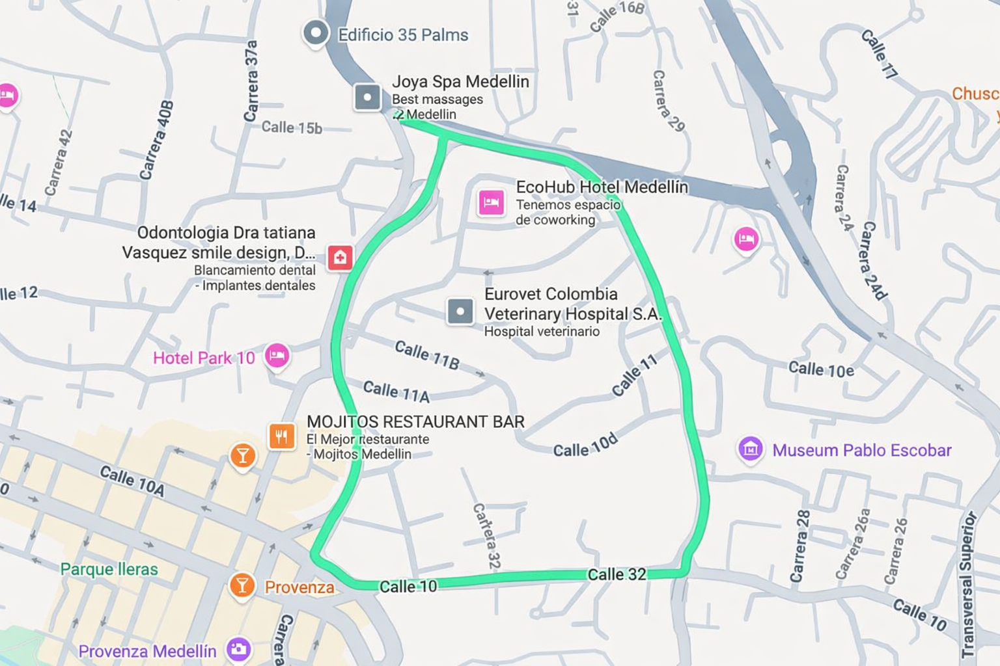

Análisis de Localización
Proyecto
Ambulatorio
Hospital Pablo Tobón Uribe
Determinar las micro-zonas más idóneas dentro del Valle de Aburrá para la sede ambulatoria del Hospital Pablo Tobón Uribe.
Medellín
Estratos objetivo
5 y 6
Habitantes estratos 5–6
—
[dato por completar]
Predios analizados
—
[dato por completar]
Índice IRS
0–100
Puntuación compuesta
de 5 variables ponderadas
Cada zona recibe un puntaje de 0 a 100
Score = A×25 + D×25 + C×20 + E×15 + Vis×15
Puntuación por zona — Modelo 1
| Zona | A 25% |
D 25% |
C 20% |
E 15% |
Vis 15% |
Total |
|---|---|---|---|---|---|---|
| 1. Las Palmas Bajo | 92 | 93 | 78 | 88 | 85 | 88 |
| 2. Palmas Medio | 85 | 91 | 65 | 55 | 78 | 77 |
| 3. Envigado–Zúñiga | 75 | 80 | 62 | 72 | 78 | 74 |
| 4. Milla de Oro | 55 | 95 | 35 | 92 | 73 | 73 |
| 5. Nuevo Poblado–Itagüí | 82 | 68 | 52 | 55 | 80 | 68 |
| 6. Las Palmas Alto | 42 | 52 | 90 | 20 | 30 | 49 |
Las Palmas Bajo lidera con 88/100. Palmas Medio es #2 (77). Envigado #3 (74). Milla de Oro baja al #4 por su competencia feroz y baja accesibilidad.
Congestión vial
en hora pico
Av. El Poblado
18,0 km/h
congestión severa
Av. Las Palmas
36,1 km/h
el doble de rápido
¿Cuánto me demoro en carro a Palmas Bajo?
| Origen | Tiempo |
|---|---|
| Milla de Oro | 15,4 min |
| El Poblado (Parque) | 17,7 min |
| Envigado Centro | 24,8 min |
| Laureles | 32,3 min |
| Itagüí Centro | 33,4 min |
Fuente: Google Routes + Mapbox
Crecimiento y mercado
Valle de Aburrá a 2037
+152k
habitantes nuevos
Prepagada Antioquia
1,4M
afiliados · crecimiento +37% (2022–2025)
Revenue/año COP $7,2 billones
Cirugía ambulatoria Colombia
490.944
procedimientos/año
80% de las cirugías son ambulatorias
Actores en la zona
¿Cuántos lugares a 500 m para hacer espera productiva?
Datos reales Google Places (500 m)
| Categoría | Palmas Bajo | Milla de Oro |
|---|---|---|
| Gastronomía | 75 | 80 |
| Bienestar | 55 | 54 |
| Retail | 31 | 57 |
| Financiero | 13 | 40 |
| Farmacias | 11 | 23 |
| Total POIs | 281 | 396 |
Tráfico vehicular diario
| Corredor | Veh/día |
|---|---|
| Av. Las Palmas | 42.000 |
| Túnel de Oriente | 18.000 |
| Vía Santa Elena | 8.000 |
Palmas es un corredor sin pico y placa
Proxy de tráfico peatonal
POIs en 50 m de vías principales (Google Places)
| Zona | POIs/calle |
|---|---|
| Envigado | 100 |
| Milla de Oro | 61 |
| Palmas Bajo | 53 |
| N. Poblado | 53 |
| LP Alto | 8 |
¿Qué tan robusto
es el ranking?
Probamos 6.891 combinaciones de pesos (cada variable entre 5% y 35%) con 6 zonas y 5 variables
Escenarios clave — qué pasa si una variable domina
| Si priorizamos… | #1 | #2 | #3 | #4 |
|---|---|---|---|---|
| Base (25/25/20/15/15) | LP Bajo (88) | P. Medio (77) | Envigado (74) | MdO (73) |
| Demanda (35%) | LP Bajo (88) | MdO (79) | P. Medio (78) | Envigado (74) |
| Accesibilidad (35%) | LP Bajo (88) | P. Medio (77) | Envigado (74) | MdO (68) |
| Competencia (35%) | LP Bajo (85) | P. Medio (73) | Envigado (71) | MdO (63) |
| Esperas Prod. (35%) | LP Bajo (87) | P. Medio (73) | Envigado (72) | — |
| Visibilidad (35%) | LP Bajo (87) | MdO (79) | P. Medio (74) | Envigado (73) |
LP Bajo es #1 en 99,3% de escenarios. Palmas Medio y Milla de Oro compiten por el #2 según los pesos.
¿Y si priman visibilidad y esperas?
Ponderando Competencia (25%), Visibilidad (30%), Esperas (25%) más alto — Acc y Dem bajan a 10%
| Zona | Modelo 1 25/25/20/15/15 |
Modelo 2 10/10/25/25/30 |
Cambio |
|---|---|---|---|
| Las Palmas Bajo | 88 (#1) | 84 (#1) | Se mantiene #1 |
| Milla de Oro | 73 (#4) | 78 (#2) | ↑ Sube a #2 |
| Envigado | 74 (#3) | 72 (#3) | Se mantiene #3 |
| Palmas Medio | 77 (#2) | 70 (#4) | ↓ Baja dos posiciones |
| N. Poblado | 68 (#5) | 66 (#5) | Estable |
| LP Alto | 49 (#6) | 46 (#6) | Estable |
Palmas Bajo se mantiene #1 en ambos modelos. Milla de Oro sube de #4 a #2 por su mayor densidad de servicios caminables (396 POIs vs 281). La decisión es: ¿priman los fundamentos (accesibilidad, demanda) o la experiencia (visibilidad, esperas)?
Zona Recomendada
Zona Sugerida

Datos de zona
[datos por completar]
Hospital Pablo Tobón Uribe
Proyecto
Ambulatorio
Análisis de Localización · Valle de Aburrá